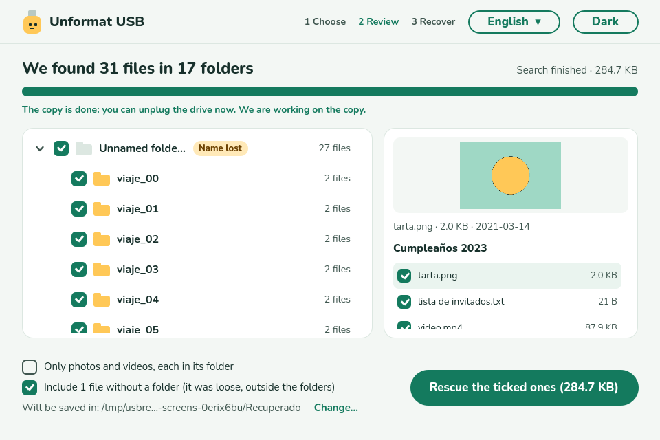
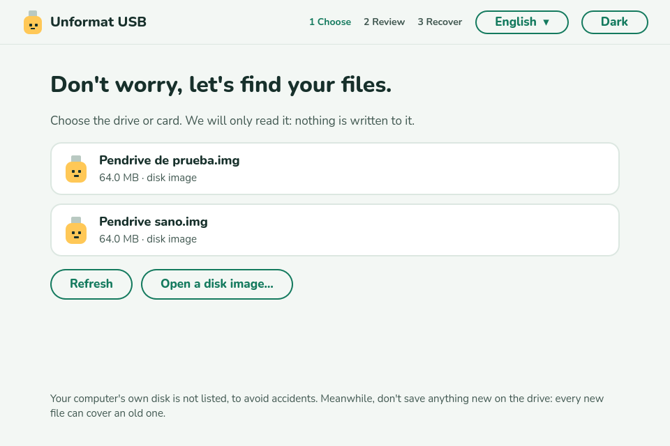
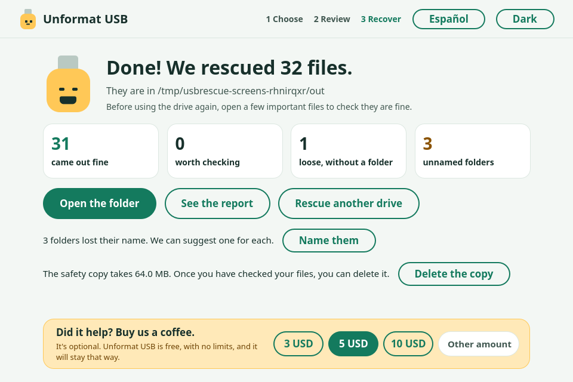
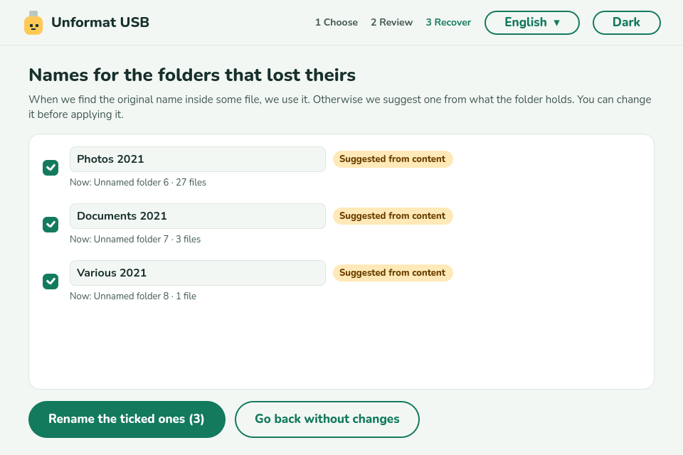

Formatted your USB drive by mistake?
Your files are probably still there. Unformat USB finds them and brings them back with their folders. Free, no limits, and it never writes to the drive.
Version 0.1.0 · English, Spanish and Portuguese · not signed yet: Windows may warn you, choose More info → Run anyway. Linux →

First, before anything else
- Stop using the drive. Don't copy anything new onto it: every new file can cover an old one.
- Don't format it again and don't let a program “repair” it.
- Keep it unplugged until you have the program ready.
How it works
- 1
Choose the drive
Only external drives and cards are listed, so you can't pick your computer's own disk by accident.
- 2
Watch the folders appear
It shows what it finds while it searches, with a preview. Tick what you want.
- 3
Rescue
The files are copied to your computer, never onto the drive itself.
What it does
Rebuilds your folders
With their original names and contents, including large videos stored in pieces.
Free for real
No 100 MB or 500 MB limit, no trial, no account. Rescue everything.
Read-only
It never writes, repairs or formats the drive, and refuses to save the rescue onto it.
Safe mode
Copies the whole drive to your computer first, then works on the copy. Best if the drive is failing.
Loose files too
Files that were outside any folder come back named after their content (a photo's date, a document's title).
Names lost folders
Suggests a name for folders that lost theirs. You approve, and it can be undone.
Only photos and videos
One tick, and you get just your pictures and videos, each in its folder.
Private
Works offline. Nothing about you or your files is sent anywhere.
A look inside



When it cannot help
To be clear: after a full format (it writes zeros everywhere), after heavy use of the drive since the format, or on an SSD/NVMe (the system erases free space by itself), there may be nothing left. Unformat USB tells you so instead of promising what it cannot do. It supports exFAT and FAT32, the formats of almost every USB drive and memory card; NTFS is not supported yet.
Questions
Can I recover files after formatting a USB drive?
Usually yes. A quick format, the default on Windows, macOS and Linux, only wipes the index of the drive. The files stay where they were until something new is written over them.
Is it really free?
Yes. No limits, no trial, no ads in the program. It is open source (GPL-3.0). If it helps you, you can buy us a coffee, but you don't have to.
Does it work with SD and microSD cards?
Yes, with any card or USB drive formatted as exFAT or FAT32, through a card reader or adapter.
Can it damage my drive?
No. It only reads. It never writes, repairs or formats the drive, and it won't save the rescued files onto the same drive.
Why does Windows ask for administrator rights?
Reading a whole drive, below its files, needs them. That is the only reason.
Windows says “Windows protected your PC”. Is it safe?
The program is not signed yet (a certificate is on the way). Choose “More info” and “Run anyway”. The source code is public and every version is built and tested automatically on GitHub.
Did it help?
Unformat USB is free and will stay free. If it brought your files back, you can buy us a coffee.